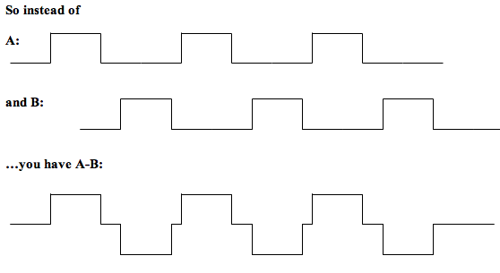

Frequently Asked Questions (PPI)
Should I include other task variables in the model?
Generally speaking, yes you should. You should include all the task EVs which were in your GLM model, even those which are not involved in generating your PPI regressor. This will make the model overall a better description of the data. However, in the literature you find papers which do this, and papers which don’t.
I want to show that my ROI interacts with some areas more in condition A than condition B (rather than just showing interaction is greater in condition A than baseline). How do I do that?
Since you can only generate an interaction between two regressors, you will need to make a task regressor (for your PSY EV) which embodies the contrast A-B. In other words, make a 3-column format regressor which has all the task blocks of A and B in it, but the weight (3rd column value) of A is 1 and the weight of B is -1.
Then your regressors will be A-B, your ROI timecourse, and the interaction between ROI timecourse and A-B (as above).

In this case you should not include A and B as well, or your design will be rank deficient.
However, if you are using A-B, you SHOULD also include a regressor for A+B (make it in 3-column format as above with all A's and B's in a single file, but all the A's and B's will have a weight of +1). The reason for doing this is that by including A-B, you can model all the differences between A and B - but not the shared variance. Including A+B mops up this shared variance. In terms of the overall model fit, {A-B and A+B} should give the same overall fit as {A and B} did in your original model. Mathematically, we would say {A+B and A-B} span the same vector space as {A and B}.
This approach should work even if you want to combine more EVs (eg A-(B+C)). Just set the weight of all the ‘minus’ conditions (B and C here) to -1, and the ‘plus’ conditions (A here) to 1 - and be sure to click the zero-centre EV button when you are making your PPI regressor.
Can I include more than one ROI/ PPI in my model?
Not a good idea in general. You are still running a GLM analysis which, as always, rests on the assumption that your regressors are orthogonal (or close to it). Your timecourses are likely not orthogonal, especially if you picked them from the same GLM output. This will screw up your analysis. Instead, run separate analyses for each ROI. You can then compare between them with a higher-level Feat analysis.